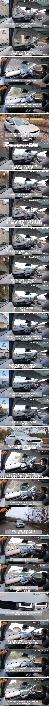

개취로 디자인은 ev쪽이 더 취향인데 아5보고 이쁘다고 생각해본적 없음..
하지만 충전, 주차장, 차검 크리로 기승전 경차데쓔
원래 일본에서 저거 타고 다니면 한국인이었는데 요즘 택시로 돌아댕기더라
아이오닉 좋다
근데 개택 이새끼들 존나 ㅈ까이 운전하는거 타보면서 이미지가 확 나빠짐
현기차는 개택들한테 손해배상 받아야된다
ㄹㅇㅋㅋ
도로에서 봐도 짜증
타도 붕끽붕끽 짜증
일본 자동차 회사들이 전기차 창 내는 거 보면 저리 칭찬할만함
현기보다 더한 옵션질 보고 기겁했음
테슬라 쇼하고나니 급국뽕글은 뭐야 ㅋㅋ
정훈교육 함 해야제
테슬라랑 현기가 합작해서 만들면 세계재패할지도
서로 부족한 면을 채워줄 수 있으니
테슬라가 아쉬울게없는데 굳이 현대랑 콜라보 하려고할까나..
솔직히 자율주행이 ㅈ박아서 그렇지 차량 자체는 잘 만들긴 함
아이오닉도 그렇고 요새 현대차는 디자인이 좆같아서 사기 싫음. 기아차가 훨씬 낫지.
차는 좋긴해
사실 내연기관도 자동차 구동계 제외하면 한국차한테 따인지 한참 됐고 디자인도 그런듯
특히 운전자의 쾌적성 측면은 일본 찌발린지 10년은 넘었어 내 차 보다가 동급가격 한국차보면 한숨나온다
이제 일본차의 장점은 구동계의 안정성, 신뢰성 정도밖에 없음
그리고 일본은 전기차로 전환도 힘든게 자동차 산업구조가 일본 경제에 너무 탄탄히 엮여있어서 여기 손대는것부터 난관이고
전기차 비용의 큰 비중을 차지하는 배터리 수급도 한국보다 난이도가 훨씬 높음
토요타마저 중국차 떼다 파는 마당에 혼다는 전환 포기선언 했고 2강이 이러는데 말 다했지 닛산은 회사 자체가 어렵고
일본은 최대한 하이브리드에서 버티려고 할거다
사실 일본이 전기차 위주로 편제되면 충전인프라는 훨씬 깔기 좋을텐데
우리나라는 자율주행이 뒤쳐진거 빼곤 뭐
근데 그게 존나 큰듯
저때는 ㄹㅇ 말도 안되는 기술이었음 지금은 평범해졌지만
개인적으로 디자인이 너무 맘에 들어서 작년에 사서 이제 1년 정도 타는데
서스펜션 딱딱한거 빼고는 전반적으로 마음에 든다.
택시 소리 듣네 뭐네 그러는데 일단 택시로 많이 풀린 차라 부품 수급은 쉬울듯함
테슬라 지금 날라댕기는데.. 독일차던 한국차던 어떻게 살아남은려나
그냥 흔한 택시잖아
뭐야 돈먹었나 나쁘지는 않은데 저정도는아닌데
이게 한 4년전 영상인데 지금도 독3사까진 무리인 일반인이 800V 타려면 저거랑 ev6이 유일한 선택지긴함
저 이후로 좆망해서 문제
택시라고 욕하지만... 택시 = 좋은차임
당시에나 나올수있는 말이었지
지금은 솔까 현기만의 강점이 딱히없음… 800V 충전 시스템정도..?
항상 소프트웨어가 문제구만. 소프트웨어만 테슬라만큼 있어도 전기차1황 먹는건데
일본가면 아이오닉 자주 보여서 놀랐음
옛날에는 일본에서 한국차 보이는거 상상도 못했는에
근데 일본에선 너무 커서 잘 안팔린다고 하던데
아이오닉에 fsd들어가면 지릴텐데 ㅜ.ㅜ
일본 개붕이들..
마츠다 cx5 괜찮다. 정말 괜찮다
이게 언제적 리뷰야 ㅋㅋㅋㅋ